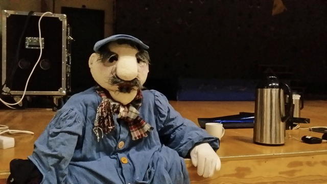
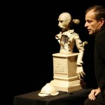

FRA TEKST TIL FIGURTEATERFORESTILLING - 3 dgr. FRIST 15/9
- Kategori:
- Kurs med åpning for andre
Kurs med åpning for andre
Åpent for profesjonelle skuespillere. En viss åpning for andre utøvende kunstnere med relevant erfaring. Andre kunstnere må sende CV. - Dato:
- 22.10.2016 til 24.10.2016
- Start kl :
- 11:00
- Slutt kl :
- 16:00
- Pris:
- 800,-
- Adresse:
- Norsk Skuespillersenter, Welhavens gate 1, Oslo

{kind=link}
- Den skapende animasjonsskuespilleren
Bli veiledet av figurteaterkunstneren Knut Alfsen og regissør Katinka Rydin Berge, i møtet med nye tekster spesialskrevet for figurteater av dramatikere tilknyttet Dramatikkens Hus
- Søknadsfrist: 15. september
- Påmelding gjøres her: http://www.skuespillersenter.no/pamelding/
- Kurset er for skuespillere og andre med figurteaterutdanning fra HiOA.
"Befriende med et teater uten mennesker på scenen"
- Utsagn fra snakk om figur på Scenetekstivalen 2016 i Tromsø, med Lisa Lie og Figurteatret i Nordland.
Bakgrunn for kurset
Med forestillinger som ”Løvenes konge” og ”Warhorse” ble figurteater løftet inn på de store teaterscenene i Europa. Figur har et stort internasjonalt potensial som flere burde benytte seg av som scenekunstnere i Norge. Figur kan være en måte å nå et større internasjonalt publikum.
I Norge er det et fåtall av skuespillere med kunnskap og erfaring innen figurteater. Skuespillersenteret har tatt opp hansken og startet et prosjekt hvor profesjonelle skuespillere blir veiledet av figurteaterkunstneren Knut Alfsen og regissør Katinka Rydin Berge, i møte med tekster spesialskrevet for figurteater av nye norske dramatikere tilknyttet Dramatikkens Hus.
Målet med kurset
At flere profesjonelle skuespillere på høyt nivå skal få spesialkunnskapen som trengs til å løfte dette nye figurteateret videre på scenene i Norge. Kurset vil gi deltakerne erfaring med kollektive kunstneriske prosesser og få muligheten til å praktisere skuespillfaget på nye måter.
{kind=link}
Kursets forløp
Dag 1 FIGUREN FORTELLER
- Hvem fremfører teksten: figuren, aktøren eller billedskaperen? Utforskning av ulike teknikker, muligheter og begrensinger i figur. Praktisk utprøving, improvisasjon med dukker og objekter.
- Fortelling gjennom figur har tradisjonelt blitt utviklet sjangerovergripende der det å lage figur og det å fortelle er tett knyttet sammen igjennom kunstneriske kollektive prosesser. Hvordan ser en smidig metode for figurteaterutvikling ut med utgangspunkt i nye manus? Krever figurteater en utvidet forståelse av tekstbegrepet? Et bilde kan også være en tekst. Bør manuskript for figurteater utformes på samme måte som for vanlig teater, eller er det mer hensiktsmessig å utarbeide et storyboard etter mønster fra film, i samarbeid med kunstnerisk team?
- Hvilken kunstneriske kompetanse kreves av de som deltar i prosessen?
- Hva er dramatikeren/ skuespillerens rolle? Hvilke andre kompetanser trengs?
Dag 2 DET VISUELLE GREPET
Figurteater bærer i enda sterkere grad enn annen scenekunst preg av å være profesjonsovergripende. Figur, bilde, animasjon, skuespillerkunst, ord og musikk går opp i en høyere enhet der figuren står i sentrum av fortellingen. Den samlende kunstneriske ideen som inkluderer alt dette - eller dette figurteatergrepet - begrunner og rettferdiggjør hvorfor figurteater er valgt som uttrykksform.
Inndeling i grupper. Dramatiker og skuespillere utvikler sammen grepet i en av de valgte tekstene. Gruppene får feedback fra de andre gruppene på sine ideer og jobber videre.
- Hvilke materialer skal man bruke?
- Virkemidler og bruk av musikk?
- Hvordan skaffer vi materialer?
Dagen avsluttes med presentasjon av Figurteatergrepet og hvordan gruppen vil jobbe videre.
Dag 3 SPILL!
- Gruppene jobber videre med sine prosjekter.
- Feedback i prosessen.
- Nye ideer.
- Gruppen jobber videre med veiledning av Katinka og Knut.
Levende Dukker ledes av Knut Alfsen, og har i flere tiår vært en kunstnerisk drivkraft, igangsetter, regissør og profilert figurteater-utøver i Norge. Han var med å starte Figurteatret i Nordland - Norges eneste institusjon dedikert til figur og objektteater, og har drevet sitt eget kompani Levende Dukker i 20 år ved siden av å være regissør for en rekke dukke- og figurproduksjoner i Norge og internasjonalt. Levende Dukker har arbeidet spesielt med kunstneriske prosjekter i kryssfeltet figur og levende musikk.
{kind=link}
Kompaniet ønsker i samarbeid med Norsk Skuespillersenter å dele av sin kompetanse på figurteater med skuespillere som ikke har kjennskap til figur i sin utdanning eller kunstneriske praksis, og som ønsker å utvikle flere strategier for kunstnerisk arbeid på scenen ved bruk av objekter.
Katinka Rydin Berge, som nyutdannet regissør med en tradisjonell regiutdannelse, ble ved en tilfeldighet kastet inn i figurteateret på Riksteatret i 2004. Her oppdaget hun figurteater som et verktøy i teater. Hun utvikler scenekunstprosjekter som regissør, dramaturg og manusforfatter. Hun har samarbeidet med Levende Dukker om å utvikle forestillingen Gjøkungen for 2 – 5-åringer, der hun hadde manus og regi. Å utvikle gode situasjoner med objekter handler ofte om musikalitet og god lytting mellom objekt og spiller, mener hun. Figurteater er en metode for å få en visuell verden til å leve uten ord. Figur har et stort internasjonalt potensial som flere burde benytte seg av som scenekunstnere i Norge. Figur kan være en måte å nå et større internasjonalt publikum, både som skuespiller og designer. I sitt eget Kompani Camping, utvikler og regisserer hun ofte ny reseachbasert dramatikk. Hun er involvert som initiativtaker og kunstnerisk programmerer for Vega Scene; En scene for ny resarchbasert dramatikk og film som bygges i Oslo.
{kind=link}
Pris for NSF- og Assitej-medlemmer: 750,-
Pris for andre med figurteaterutdanning fra HiOA, som fortsatt er studenter: 500,-
Veiledende samarbeidspartner:
{kind=link}